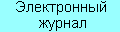

|
|
|
|
|
|
 |
|
Конференции за рубежом:
CDC 2020 The 59th IEEE Conference on Decision and Control December 8-11, 2020. Jeju Island, Republic of Korea.
IFAC 2020 21st World Congress of the International Federation of Automatic Control July 12-17, 2020. Berlin, Germany.
MED 2020 28th Mediterranean Conference on Control and Automation June 16-19, 2020. Saint-Raphael, France
ECC2020 European Control Conference May 12-15, 2020, Saint Petersburg, Russia
Конференции в России:
27 МКИНС2020 XXVII Санкт-Петербургская международная конференция по интегрированным навигационным системам Санкт-Петербург, Россия, 25-27 Мая 2020 г.
ECC2020 Европейская конференция по проблемам управления Санкт-Петербург, Россия, 12-15 Мая 2020 г.
XXII КМУ 2020 XXII конференция молодых ученых "Навигация и управление движением" Санкт-Петербург, Россия, 17-20 Марта 2020 г.
Конференции за рубежом:
NOLCOS 2019 11th IFAC Symposium on Nonlinear Control Systems September 4-6, 2019. Vienna, Austria
Конференции в России:
PhysCon 2019 9th International Scientific Conference on Physics and Control Saratov, Russia, 8-11 July 2019
Конференции в России:
ВСПУ 2019 XIII Всероссийское совещание по проблемам управления Москва, Россия, 17-20 июня 2019 г.
МКПУ 2018 XI Российская мультиконференция по проблемам управления Санкт-Петербург, Россия, 02-04 Октября 2018 г.
Конференции за рубежом:
IFAC 2020 21st World Congress of the International Federation of Automatic Control July 12-17, 2020. Berlin, Germany.
CDC 2019 The 58th IEEE Conference on Decision and Control December 11-13, 2019. Nice, France.
ECC2019 European Control Conference June 25-28, 2019, Naples, Italy
Конференции в России:
TGSMM 2019 V Симпозиум международной ассоциации по геодезии (IAG) "Наземная, морская и аэрогравиметрия: измерения на неподвижных и подвижных основаниях" Санкт-Петербург, Россия, 1-4 Октября 2019 г.
26 МКИНС 2019 XXVI Санкт-Петербургская международная конференция по интегрированным навигационным системам Санкт-Петербург, Россия, 27-29 Мая 2019 г.
КМУ 2019 XXI конференция молодых ученых "Навигация и управление движением" Санкт-Петербург, Россия, 19-22 Марта 2019 г.
Конференции за рубежом:
CDC 2018 The 57th IEEE Conference on Decision and Control December 17-19, 2018. Miami Beach, FL, USA.
Конференции за рубежом:
CCTA 2018 The 2018 IEEE Conference on Control Technology and Applications August 21-24, 2018, Copenhagen, Denmark
Конференции в России:
КМУ 2018 XX Юбилейная конференция молодых ученых "Навигация и управление движением" Санкт-Петербург, Россия, 20-23 марта 2018 г.
Конференции за рубежом:
5th CHAOS 2018 Analysis and Control of Chaotic Systems October 30 - November 1, 2018, Eindhoven, NETHERLANDS
ADHS 2018 IFAC Conference on Analysis and Design of Hybrid Systems July 11-13, 2018, Oxford, UK
ISC 2018 International Conference on Information Society and Smart Cities June 27-28, 2018, Cambridge city, UK
CHAOS 2018 11th International Conference on Chaotic Modeling, Simulation and Applications June 5-8, 2018, Rome, Italy
Конференции в России:
CAO 2018 17th workshop of the IFAC Technical Committee on Optimal Control Екатеринбург, Россия, 15-19 октября, 2018
Конференции за рубежом:
DSSCO 18 Международная научная конференция "Динамические системы: устойчивость, управление, оптимизация" 24-29 сентября 2018, Минск, Беларусь
TDS2018 14th IFAC Workshop on Time Delay Systems June 28-30, 2018, Pesti Vigado, Budapest, Hungary
Конференции в России:
Конференция Пятницкого XIV Международная конференция "Устойчивость и колебания нелинейных систем управления" Москва, Россия, 30 мая - 1 июня 2018
ICPS 2018 1st IEEE International Conference on Industrial Cyber-Physical Systems St.Petersburg, Russia, May 15-18, 2018
Конференции за рубежом:
SYSID 2018 18th IFAC Symposium on System Identification July 9-11, 2018, Stockholm, Sweden
ECC2018 17th European Control Conference June 13-15, 2018, Limassol, Cyprus
PID18 3rd IFAC Conference on Advances in Proportional-Integral-Derivative Control May 9-11, Ghent, Belgium
Конференции в России:
25 МКИНС 2018 XXV Санкт-Петербургская международная конференция по интегрированным навигационным системам Санкт-Петербург, Россия, 28 - 30 мая 2018 г.
Конференции в России:
МКПУ-2017 10-я Всероссийская мультиконференция по проблемам управления С. Дивноморское, Геленджикский р-н, Россия, 11 - 16 сентября 2017 г.
Проблемы управления и моделирования в сложных системах XlX Международная конференция <Проблемы управления и моделирования в сложных системах> Г.Самара, Россия, 12-15 сентября 2017 г.
XI Международная Четаевская конференция АНАЛИТИЧЕСКАЯ МЕХАНИКА, УСТОЙЧИВОСТЬ И УПРАВЛЕНИЕ Казань, 14-18 июня 2017 г.
Конференции за рубежом:
CHAOS 2017 The 10th CHAOS 2017 International Conference 30 May-2 June 2017 Barcelona, Spain
Конференции в России:
School-NDM-2017 IV Международная школа-конференция молодых ученых "Нелинейная динамика машин" Москва, Россия, 18 - 21 апреля 2017 г.
Конференции за рубежом:
MED 2017 25th Mediterranean Conference on Control and Automation July 3-6, 2017. Valletta, Malta
Конференции в России:
DFDE 2017 The 8th International Conference on Differential and Functional Differential Equations Moscow, Russia, August 13-20, 2017
Конференции за рубежом:
PhysCon 2017 8th International Conference on Physics and Control 17-19 July, 2017, Florence - Italy
Конференции в России:
24 МКИНС 2017 XXIV Санкт-Петербургская международная конференция по интегрированным навигационным системам Санкт-Петербург, Россия, 29 - 31 мая 2017 г.
Конференции в России:
УПРАВЛЕНИЕ, ИНФОРМАЦИЯ И ОПТИМИЗАЦИЯ VIII Традиционная всероссийская молодежная научная летняя Школа 13-19 июня 2016 года в Ленинградской обл.
Конференции за рубежом:
IFAC 2017 20th World Congress of the International Federation of Automatic Control July 9-14, 2017. Toulouse, France.
Конференции за рубежом:
MECHATRONICS 2016 7th IFAC Symposium on Mechatronic Systems & 15th Mechatronics Forum International Conference September 5-8, 2016. Loughborough University.
Конференции за рубежом:
CDC 2016 The 55th IEEE Conference on Decision and Control December 12-14, 2016. Las Vegas, NV, USA.
Конференции за рубежом:
Thinking Machines in the Physical World IEEE 2016 Conference on Norbert Wiener in the 21st Century 13-15 July 2016, Melbourne Australia.
Конференции в России:
STAB' 16 XIII Международная конференция "Устойчивость и колебания нелинейных систем управления" (Конференция Пятницкого). Москва, ИПУ РАН, 1-3 июня 2016.
23 МКИНС 2016 XXIII Санкт-Петербургская международная конференция по интегрированным навигационным системам Санкт-Петербург, Россия, 30 мая - 1 июня 2016 г.
КМУ 2016 XVIII конференция молодых ученых "Навигация и управление движением" Санкт-Петербург, Россия, 15-18 марта 2016 г.
Конференции за рубежом:
ECC16 14th European Control Conference June 29 - July 1, 2016, Aalborg, Denmark.
Конференции за рубежом:
NOLCOS 2016 10th IFAC Symposium on Nonlinear Control Systems August 23-25, 2016. Marriott Hotel Monterey, California, USA.
MIM 2016 8th IFAC Conference on "Manufacturing Modelling, Management, and Control" June 28-30, 2016. Troyes, France
ICONS 2016 4th IFAC International Conference on Intelligent Control and Automation Sciences June 1-3, 2016. Reims, France
ACE 2016 11th IFAC Symposium on Advances in Control Education June 1-3, 2016. Bratislava, Slovakia
Конференции в России:
МКПУ-2015 8-ая Всероссийская мультиконференция по проблемам управления С. Дивноморское, Геленджикский р-н, Россия, 28 сентября - 03 октября 2015 г.
Конференции за рубежом:
ALCOSP'2016 12th IFAC International Workshop on Adaptation and Learning in Control and Signal Processing June 29 - July 1, 2016 Eindhoven, The Netherlands.
PSYCO'2016 6th IFAC International Workshop on Periodic Control Systems June 29 - July 1, 2016 Eindhoven, The Netherlands
Конференции за рубежом:
Автоматика-2015 XXII Международная конференция по автоматическому управлению Одесса, Украина, 10-11 сентября 2015
Конференции в России:
АМУР-2015 IX Международная школа-симпозиум "Анализ, моделирование, управление, развитие социально-экономических систем" Севастополь, 12-21 сентября 2015
Конференции за рубежом:
CDC 2015 The 54th IEEE Conference on Decision and Control Osaka, Japan, December 15-18, 2015
IFAC ROCOND 2015 8th IFAC Symposium on Robust Control Design Bratislava, Slovakia, July 8-11, 2015
Конференции в России:
«АВТОМАТИЗАЦИЯ ПРОИЗВОДСТВА-2015» Шестая Межотраслевая конференция «АВТОМАТИЗАЦИЯ ПРОИЗВОДСТВА-2015» Москва, Россия, 24 ноября 2015.
22 МКИНС 2015 XXII Санкт-Петербургская международная конференция по интегрированным навигационным системам 25 - 27 мая 2015 г., Санкт-Петербург, Россия
XVII КМУ 2015 XVII конференция молодых ученых "Навигация и управление движением" 17 - 20 марта 2015 г., Санкт-Петербург, Россия
 Базы данных по системам и управлению
Базы данных по системам и управлению
 Учебные материалы по системам, автоматике и управлению
Учебные материалы по системам, автоматике и управлению
 История теории управления, кибернетики, информатики
История теории управления, кибернетики, информатики
Конференции за рубежом:
IFAC CHAOS 2015 4th IFAC Conference on Analysis and Control of Chaotic Systems Tokyo, Japan, August 26-28, 2015
PhysCon 2015 7th International Scientific Conference on Physics and Control Istanbul, Turkey, 19-22 August, 2015
Конференции в России:
SDCP'2014 Динамика систем и процессы управления
Международная конференция, посвященная 90-летию со дня рождения академика Н.Н.КрасовскогоЕкатеринбург, 15 - 20 сентября 2014 г.
Конференции за рубежом:
AUCC 2014 Australian Control Conference Canberra, Australia, 17-18 November 2014
Конференции в России:
MICNON-2015 1st IFAC Conference on Modelling, Identification and Control of Nonlinear Systems Saint-Petersburg, RUSSIA, June 24-26, 2015.
РМКПУ 2014 7-я Российская мультиконференция по проблемам управления 7 - 9 октября 2014 г., Санкт-Петербург, Россия
21 МКИНС 2014 XXI Санкт-Петербургская международная конференция по интегрированным навигационным системам 26 - 28 мая 2014 г., Санкт-Петербург, Россия
Конференции за рубежом:
CDC 2014 The 53rd IEEE Conference on Decision and Control Los Angeles, CA, USA, December 15-17, 2014
IEEE MSC 2014 The 2014 IEEE Multi-Conference on Systems and Control Antibes/Nice, France, 8-10 October 2014
IFAC 2014 The 19th World Congress of the International Federation of Automatic Control Cape Town, South Africa, 24-29 August 2014
Российские журналы:
"Вопросы кибербезопасности" "Control Engineering Россия"
Конференции в России:
Управление большими системами XI Всероссийская школа-конференция молодых ученых Арзамас, 9-12 сентября, 2014 г.
УПРАВЛЕНИЕ, ИНФОРМАЦИЯ И ОПТИМИЗАЦИЯ ШЕСТАЯ ТРАДИЦИОННАЯ ВСЕРОССИЙСКАЯ МОЛОДЕЖНАЯ ЛЕТНЯЯ ШКОЛА Московская обл., 22 - 29 июня 2014 г.
Конференции за рубежом:
ECT 2014 The 9th International Conference on Electrical and Control Technologies May 8-9, 2014, Kaunas, Lithuania
Конференции в России:
EECI International Graduate School on Control 2014 (EECI-IGSC-2014) Весной 2014 года в различных местах по всему миру будет проходить международная школа по управлению EECI International Graduate School on Control 2014 (EECI-IGSC-2014) (http://eeci-institute.eu/IGSC2014). Особый интерес представляет курс "НЕЛИНЕЙНОЕ УПРАВЛЕНИЕ ФИЗИЧЕСКИМИ СИСТЕМАМИ", который пройдет в Санкт-Петербурге 14-19 апреля 2014 года. Преподаватели:
Roger W. Brockett, Harvard School of Engineering and Applied Sciences, USA
А.Л. Фрадков, ИПМаш РАН, Санкт-Петербург, Россия
Участники лекционного курса будут иметь возможность участвовать в конференции "УПРАВЛЕНИЕ ФИЗИЧЕСКИМИ СИСТЕМАМИ" со стендовыми докладами. Избранные доклады будут опубликованы в специальном выпуске журнала IPACS "CYBERNETICS AND PHYSICS". Крайний срок для регистрации участников - 20 декабря 2013 года.
Туристическая информация, информация о размещении и общественных мероприятиях появится в ближайшее время на сайте: ww.eeci-institute.eu/IGSC2014.
Российские журналы:
"Наука и образование" Издание МГТУ им. Н.Э. Баумана
Конференции в России:
XII Всероссийское совещание по проблемам управления Москва, Институт проблем управления имени В.А. Трапезникова РАН, 16-19 июня 2014 г.
Конференции в России:
МКПУ-2013 6-ая Всероссийская мультиконференция по проблемам управления С. Дивноморское, Геленджикский р-н, Россия,30 сентября - 05 октября 2013 г.
МТУМ 2013 Международная конференция "Математическая теория управления и механика" г. Суздаль, Владимирская область, 5 - 9 июля 2013 года
Конференции за рубежом:
АМУР-2012 VI Международная школа-симпозиум "Анализ, моделирование, управление, развитие экономических систем" Севастополь, Украина, 12-21 сентября 2013 года.
Конференции в России:
ПУМСС-2013 XV Международная конференция "Проблемы управления и моделирования в сложных системах" Самара, Россия, 25-28 июня 2013 г.
УПРАВЛЕНИЕ, ИНФОРМАЦИЯ И ОПТИМИЗАЦИЯ ПЯТАЯ ТРАДИЦИОННАЯ ВСЕРОССИЙСКАЯ МОЛОДЕЖНАЯ ЛЕТНЯЯ ШКОЛА Подмосковье, Россия, 16-23 июня 2013 г.
UBS 2013 X Всероссийская школа-конференция молодых ученых Управление Большими Системами Уфа, Россия, 5-7 июня 2013 г.
Конференции за рубежом:
ECMSM 2013 11th International Workshop IEEE, Electronic Control, Measurement, Signals and their application to Mechatronics Toulouse, France, June 24-26, 2013.
Конференции за рубежом:
DSMSI-2013 Международная конференция "Моделирование и исследование устойчивости динамических систем" Киевский Национальный университет им. Тараса Шевченко, Киев, Украина, 29-31 мая 2013 г.
Российские организации и фонды/Общественные организации:
Общество Научных Работников (ОНР)
Конференции за рубежом:
CDC 2013 IEEE 52nd Annual Conference on Decision and Control Firenze, Italy , December 10-13, 2013.
NOLCOS 2013 9th IFAC Symposium on Nonlinear Control Systems Toulouse, France, September 4-6, 2013.
Physcon 2013 6th International Conference on Physics and Control San Luis Potosi, Mexico, August 26-29, 2013.
ALCOSP'2013 IFAC International Workshop on Adaptation and Learning in Control and Signal Processing Caen, France, July 3-5, 2013.
PSYCO'2013 IFAC International Workshop on Periodic Control Systems Caen, France, July 3-5, 2013.
История теории управления, кибернетики, информатики:
23 апреля 2012 года исполнилось 80 лет со дня рождения Анатолия Аркадьевича Первозванского (1932 - 1999 гг.)-
выдающегося ученого в области теории автоматического управления, заслуженного деятеля науки и техники РФ,
профессора кафедры "Механика и процессы управления" СПбГПУ.
К юбилею А.А. Первозванского открыт сайт: http://pervozvanski.com
27 марта 2012 года ушел из жизни выдающийся Санкт-Петербургский ученый профессор Ратмир Александрович Полуэктов (1930-2012),
зав. лабораторией Агрофизического института РАН.
Памятный сайт Р.А.Полуэктова: http://rpoluektov.ru
Конференции в России:
NSA 2012 Конструктивный негладкий анализ и смежные вопросы Санкт-Петербург, 18-23 июня 2012.
23 апреля в Санкт-Петербурге отмечалось 80-летие со дня рождения Анатолия Аркадьевича Первозванского,
см. http://www.physmech.ru/modules.php?name=News&file=print&sid=664
Открыт обновленный сайт А.А. Первозванского: pervozvanski.com
Конференции за рубежом:
ICNSC 2013 IEEE 10th International Conference on Networking, Sensing and Control Evry, France, April 10-12, 2013.
ICRoM 2013 First RSI/ISM International Conference on Robotics and Mechatronics Tehran, Iran, February 12-14, 2013.
NETGCOOP 2012 International Conference on Network Games, Control and Optimization Paris, France, November 28-30, 2012.
ICCS 2012 International Conference on Complex Systems Agadir, Morocco, November 5-6, 2012.
ICSTCC 2012 16Th International Conference On System Theory, Control And Computing Sinaia, Romania, October 12-14, 2012.
CCCA'12 2nd International Conference on Communications, Computing and Control Applications Marseilles, France, September 12-14, 2012.
Конференции в России:
ICUMT 2012 IV International Congress on Ultra Modern Telecommunications and Control Systems and Workshops St. Petersburg, Russia, October 3-5, 2012.
Конференции в России:
DIST 2012 Workshop Distributed Intelligent Systems and Technologies St. Petersburg, Russia, July 2-4, 2012.
Публикации/Зарубежные журналы:
Вышел 1-й номер нового международного журнала
CYBERNETICS AND PHYSICS
Журнал рецензируемый, правила для авторов - на сайте
http://cap.physcon.ru
Присылайте свои статьи!
Конференции в России:
МКПУ-2012 4-я МУЛЬТИКОНФЕРЕНЦИЯ ПО ПРОБЛЕМАМ УПРАВЛЕНИЯ Санкт-Петербург, Россия, 9-11 октября 2012 г.
УПРАВЛЕНИЕ, ИНФОРМАЦИЯ И ОПТИМИЗАЦИЯ ЧЕТВЕРТАЯ ТРАДИЦИОННАЯ ВСЕРОССИЙСКАЯ МОЛОДЕЖНАЯ ЛЕТНЯЯ ШКОЛА пос. Безводное, 17-24 июня 2012 г.
Конференции за рубежом:
LHMNLC 2012 4th IFAC Workshop on Lagrangian and Hamiltonian Methods for Non Linear Control Bertinoro, Italy, August 29-31, 2012.
Конференции за рубежом:
IS'12 6th IEEE International Conference on Intelligent Systems Sofia, Bulgaria, September 6-8, 2012.
Конференции в России:
X Международная Четаевская конференция АНАЛИТИЧЕСКАЯ МЕХАНИКА, УСТОЙЧИВОСТЬ И УПРАВЛЕНИЕ Казань, 12-16 июня 2012 г.
Конференции за рубежом:
MMAR 2012 17th International Conference on Methods and Models in Automation and Robotics Miedzyzdroje, Poland, August 27 -30, 2012.
Конференции за рубежом:
MSC 2012 2012 IEEE Multi-Conference on Systems and Control Dubrovnik, Croatia, October 3-5, 2012.